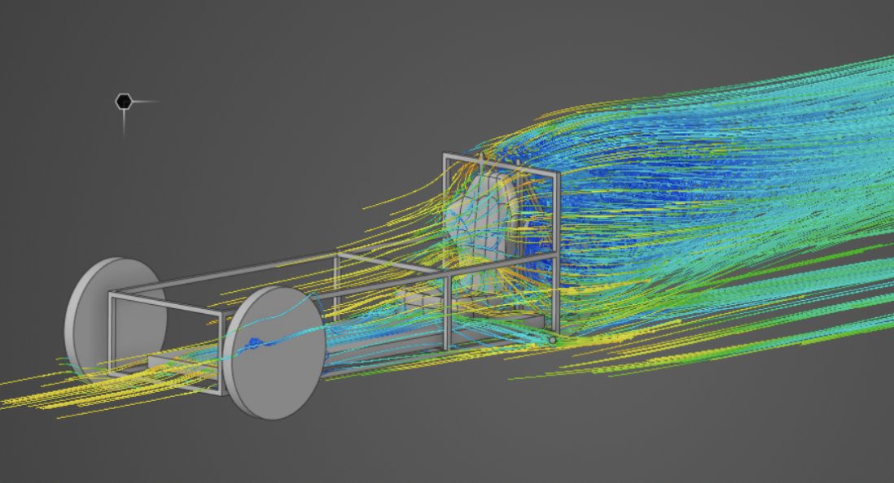
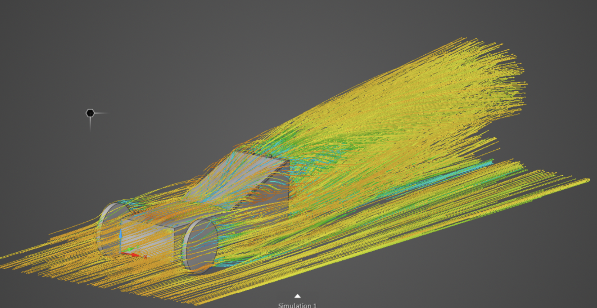
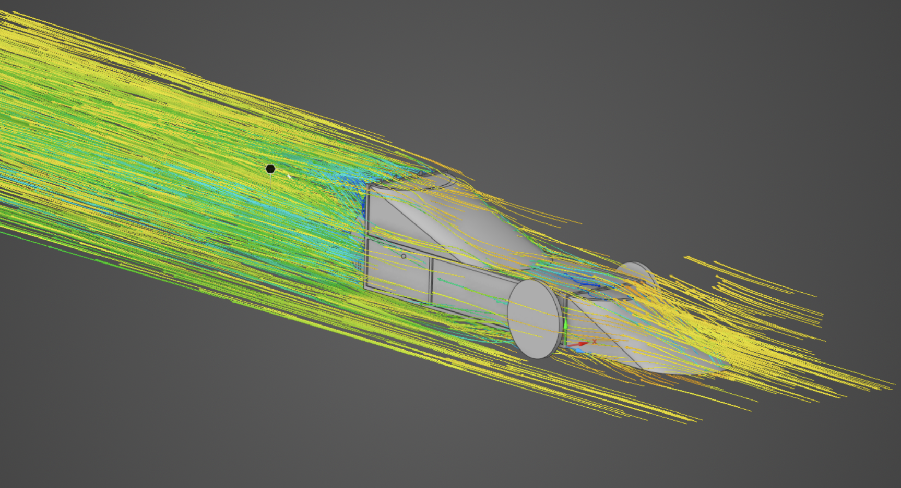

Aerodynamic Comparison of Electric Tricycles
Three three-wheeled electric vehicles (Tricycle A, B, and C) were tested in a virtual wind tunnel to compare aerodynamic performance using drag force and frontal area. A lower drag coefficient means better efficiency and range.

Tricycle A (Skinned)
Aerodynamic bodywork lowers drag and increases efficiency compared to open-frame designs.

Tricycle B (Open)
Open structure results in higher drag, meaning greater energy use at the same speed.

Tricycle C (Smooth-skinned)
Smoother, enclosed surfaces reduce drag further, achieving the best aerodynamic performance.
| Tricycle | Drag Force (N) | Frontal Area (m²) | Drag Coefficient |
|---|---|---|---|
| A (Skinned) | 3.59 | 0.423 | 0.46 |
| B (Open) | 4.29 | 0.2791 | 0.83 |
| C (Smooth-skinned) | 2.84 | 0.398 | 0.385 |
Conclusion: Tricycle C, with its smooth bodywork, had the lowest drag coefficient, showing that thoughtful design improvements can greatly enhance range and efficiency.